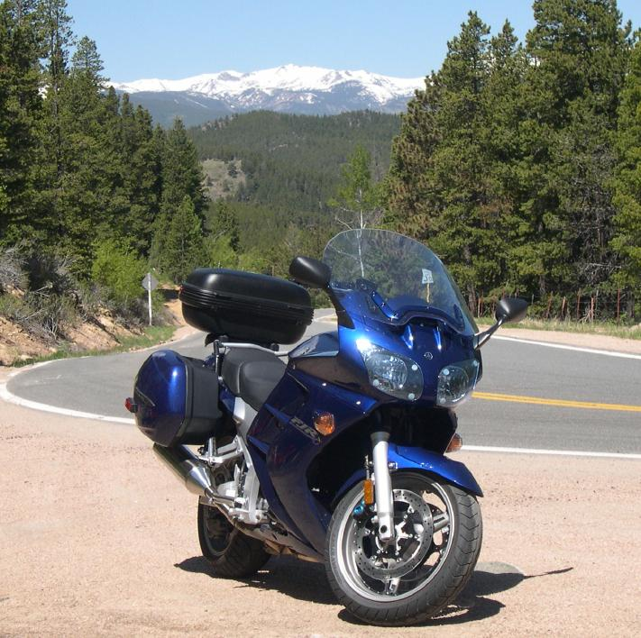

| Colorado Motorcycle Rides - Rocky Mountain Front Range | Kayak Builders Manual Links Page |
|  |
Introduction - A brief description of this site. Clear Creek Canyon - The ride begins in Golden and climbs through Clear Creek Canyon towards Echo lake / Mt. Evans. The return is over Squaw Pass and down into Morrison. ( 100 miles) Coal Creek Canyon - The ride begins in Golden and follows Coal Creek Canyon to the Peak to Peak Highway, returning through Boulder Canyon. ( 65 miles) Deer Creek Canyon - The ride begins southwest of Denver and follows Dear Creek Canyon, Hwy 285, Hwy 9, Swan Mountain Road, Hwy 6 over Loveland Pass, and returns via I-70.( 175 miles) Golden Gate Canyon - The ride begins northwest of Denver along Hwy 36 to Estes Park and follows Hwy 7, Hwy 72, Hwy 119, and returns along Golden Gate Canyon (Hwy 46) . ( 175 miles) I-70 to Frisco - Motorcycling to Frisco for a day's sailing at Dillon Reservoir. Southwest Colorado Ride (3 days) - Sport Touring 1000 miles to the Great Sand Dunes, the Million Dollar Highway, and the Black Canyon of the Gunnison. Kayaking at Gross Reservoir - Not a motorcycling Link, but it is located along Coal Creek Canyon (Hwy 72) , so why not ! |
| FJR - 1300 Super-Sport Touring | |